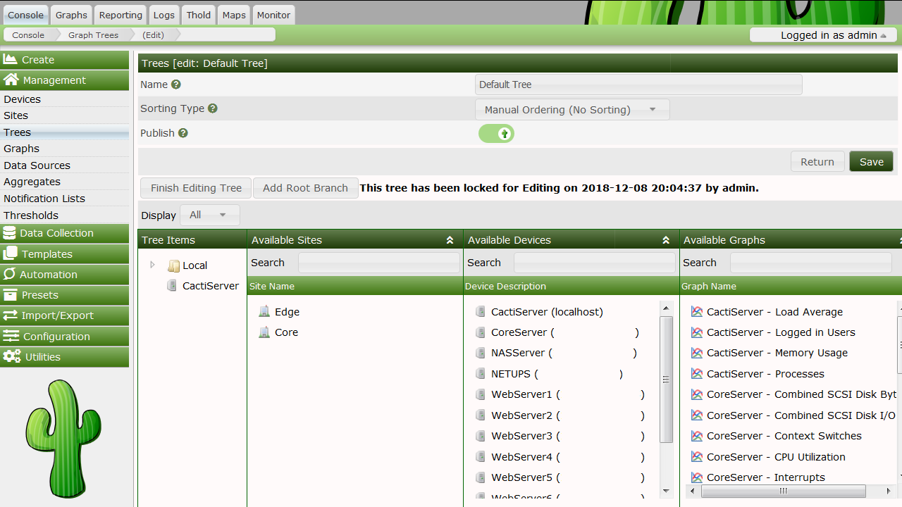

A graph tree can be thought of as a hierarchical way of organizing your graphs. Each graph tree consists of zero or more headers or branch nodes that contain leaf nodes such as graphs or trees. Multiple graph trees or branches within a single tree can be combined to form a very powerful way of organizing your graphs.
To create a new graph tree, select the Graph Trees menu item under the Management header. Select Add on this page to create a new tree. The following page will prompt you for a tree name, which will be used to identify the graph tree throughout Cacti. Along with the Name, you may select one of four currently supported Sorting Types
| Field | Value | Description |
|---|---|---|
| Name | Name of the tree entry. | The sort order of all trees themselves is always alphabetical |
| Sorting Type | Manual Ordering (No Sorting) | You may chance the sequence at your will |
| Alphabetical Ordering | 1, Ab, ab | All sub-trees are ordered alphabetically, unless specifies otherwise (you may chance sort options at sub-tree label) |
| Natural Ordering | ab1, ab2, ab7, ab10, ab20 | N/A |
| Numeric Ordering | 01, 02, 4, 04 | Leading zeroes are not taken into account when ordering numerically |
Once you type a name, click the Create button to continue. You will be redirected to a page similar to the one below, but without all of the items.

To start adding items to your tree, click add in the Tree Items box. There are currently three different types of tree items you can choose from: header, graph, or host. Simply choose the type you want, fill in the value for that type, and click Create to make your new graph tree item. Clicking the Add link to the right of any branch will add the new item below that branch, you can change the branch that any item belongs to by changing its Parent Item field.
Please note the "++" and the "--" buttons. They will help you managing large trees. Pressing the "--" will collapse all tree levels while "++" expands all of them. You may expand each single sub-tree of a collapsed tree to reorder, add or delete entries without much scrolling.
Copyright (c) 2004-2020 The Cacti Group